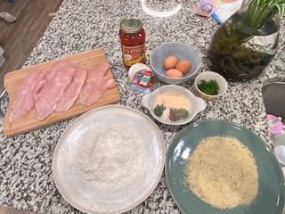
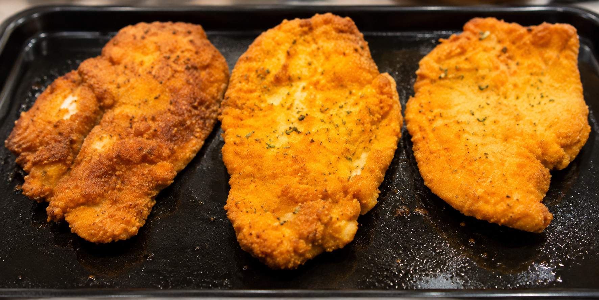
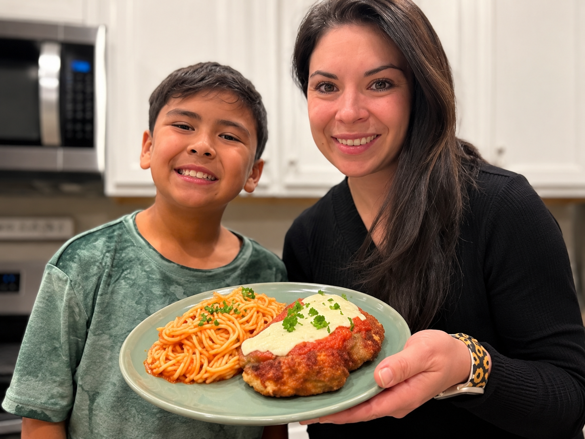

A family favorite
Baked Chicken Parmesan
Chicken parmesan is one of my favorite comfort-food dinners. I love the crispy breading, marinara sauce, and melted mozzarella cheese. This version is baked instead of fried, making it a lighter option that still tastes like a classic. It's also an easy family meal to pair with pasta, salad, or vegetables.
Servings: 4
Prep: 20 minutes
Cook: about 35 minutes
Oven: 425°F
Ingredients
Gather everything before starting.
- 1½ lb boneless, skinless chicken breasts
- ½ cup whole wheat flour
- 3 large eggs
- 1 cup unseasoned whole wheat breadcrumbs
- ½ cup grated Parmesan cheese
- ¼ tsp black pepper
- 2 tsp dried basil
- 2 tsp dried parsley
- 1½ cups marinara sauce
- 1½ cups shredded mozzarella cheese
Step-by-Step Directions
- Slice the chicken breasts lengthwise to create thinner cutlets. Place between plastic wrap and gently pound to about ¼-inch thickness.
- Preheat the oven to 425°F. Line a baking sheet with parchment paper.
- Prepare three shallow bowls: one with flour, one with whisked eggs, and one with breadcrumbs mixed with Parmesan, pepper, basil, and parsley.
- Coat each chicken cutlet in flour, dip it in egg, and then press it into the seasoned breadcrumb mixture.
- Place the breaded chicken on the baking sheet. Bake for 15 minutes, flip, and bake about 15 more minutes. Check that the center reaches 165°F.
- Top each cutlet with marinara sauce and mozzarella cheese. Broil for approximately 2 minutes, watching closely until the cheese melts.
- Serve hot with pasta, salad, or your favorite vegetables. Enjoy!
Photos From My Kitchen
Three spots are ready for your own pictures. Until you add them, these remain blank placeholders.
Preparation

Before
Boiling

The Makers

Recipe Source
This recipe is adapted from Liz Marino's Healthy Baked Chicken Parmesan on The Clean Eating Couple (2024).